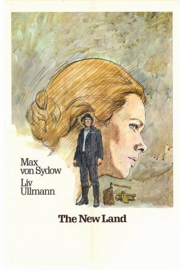
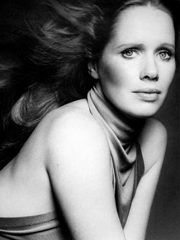
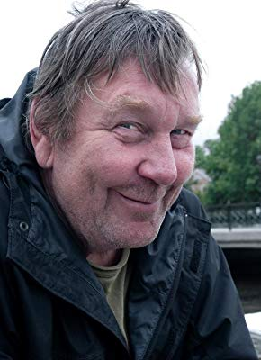

#11037 Das Neue Land
Auszeichnungen: für 1 Oscars nominiert 1 GoldenGlobes gewonnen
 
 IMDB-Wertung: 8.0 / 10
IMDB-Wertung: 8.0 / 10  Metascore: 0
Metascore: 0 
The continuing saga of the Nilssons - husband and wife Karl-Oskar and Kristina, their several young children with another on the way, Karl-Oskar's younger brother Robert, and some of their extended family members such as Kristina's Uncle Danjel - and several of their Swedish compatriots is presented. This phase of their story begins where their saga in The Emigrants (1971) left off, in the fall of 1850, having just arrived in Minnesota from their native Sweden to begin what they hope will be a better life. They left Sweden because of the harsh and worsening conditions of their farm life, and chose Minnesota based on the stories of many of their Swedish friends who emigrated there before them. While Karl-Oskar goes through the process of setting up their homestead, eighteen year old Robert already has bigger dreams of striking it big in the California gold rush, something he is reluctant to tell Karl-Oskar until he is ready to leave if only having been under Karl-Oskar's guardianship ...
Jahr: 1972
Dauer: 202 Minuten
FSK: 12
Land: Schweden Studio: Schröder MediaTonspuren: DD1.0 - ,
Untertitel: Deutsch,
Auflösung: 720p (1200x720) Größe: 4689 MB
Genre: Drama, Western
Regisseur: Jan Troell
Drehbuch: Vilhelm Moberg, Bengt Forslund, Jan Troell
Soundtrack: Bengt Ernryd, Lars August Lundh, Georg Oddner, Nils Parling
Darsteller:
 Max von Sydow als Karl Oskar
Max von Sydow als Karl Oskar-  Liv Ullmann als Kristina
 Eddie Axberg als Robert
Eddie Axberg als Robert-  Pierre Lindstedt als Arvid
 Allan Edwall als Danjel
Allan Edwall als Danjel- Monica Zetterlund als Ulrika
 Hans Alfredson als Jonas Petter
Hans Alfredson als Jonas Petter- Agneta Prytz als Fina-Kajsa
- Halvar Björk als Anders Månsson, hennes son
- Peter Lindgren als Samuel Nöjd
 Per Oscarsson als Pastor Törner
Per Oscarsson als Pastor Törner- Oscar Ljung als Petrus Olausson
- Tom C. Fouts als Pastor Jackson
- Karin Nordström als Judit, hans hustru
- Larry Clementson als Mr. Abbot
- Georg Anaya als Mario Vallejos
- Ed Carpenter als Regementsdoktorn
- Bengt Ottekil als Fredrik Mattsson
- Elsa Hofgren als Bordellmamman
- Margita Nyström als Horan
- Hans Elfvin als Sven, Danjels son
- Solveig Samzelius als Ragnhild, hans hustru
- Leif Sandberg als Grannen
- Lasse Martinsson als Karl Oskars och Kristinas barn
- Pelle Martinsson als Karl Oskars och Kristinas barn
- Sara-Lena Arnoldsdotter als Karl Oskars och Kristinas barn
- Frans Oddner als Karl Oskars och Kristinas barn
- Yvonne Oppstedt als Karl Oskars och Kristinas barn
- Linn Ullmann als Karl Oskars och Kristinas barn
- Eva-Lena Zetterlund als Elin, Ulrikas dotter (uncredited)
Datei: X:\2-Dilogie(A-F)\Auswanderer - Neue Land\Neue Land, Das (1972, FSK12, 1200x720).mkv seit 23.04.2019
Festplatte: HD Collection-2(A-Z)-3(A-M)
 Alle Filme aus Gruppe '2-Dilogie(A-F)\Auswanderer - Neue Land'
Alle Filme aus Gruppe '2-Dilogie(A-F)\Auswanderer - Neue Land'